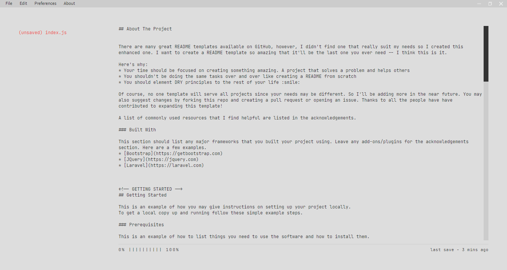
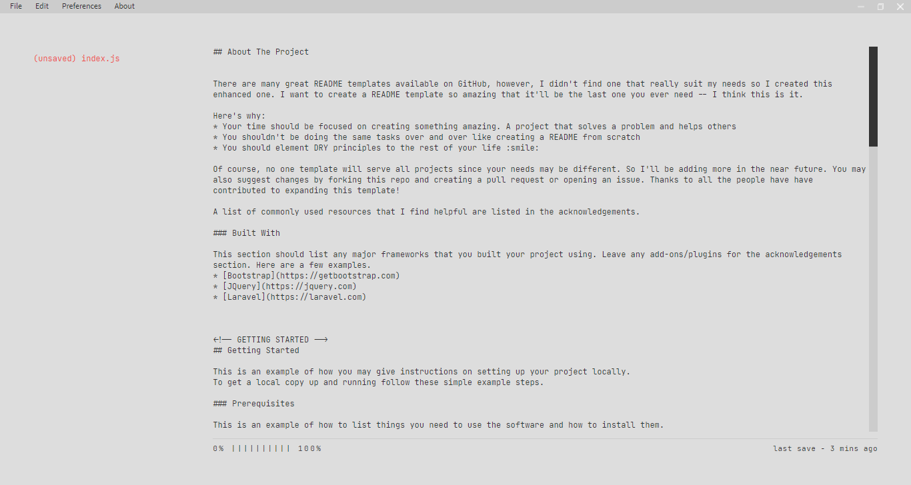

Base is distractionless plaintext editor designed to quickly navigate
between segments of an essay, or multiple documents. It features an
auto-complete, synonyms suggestions, writing statistics, markup-based
navigation and a speed-reader.
Install & Run
You can download builds for OSX, Windows and Linux, or if you wish to
build it yourself, follow these steps:
git clone https://github.com/purry03/Base.git
cd Base
npm install
npm start
About the Project
This application is heavily inspired by Left - A distractionless plaintext editor.
I created it as a personal project so as to improve my css and javascript skills. This is not a ripoff of Left and all credits (wherever applicable) go to its creators.
About the Creator
I am Rohan Sharma, a full time student. In 2020 I started learning full-stack web development. I mainly work with Node.js and am planning to start learning Django. I'm also interested in cloud technologies and have worked with Google Cloud and AWS in the past.
My current focus is learning and perfecting my knowledge of backend development and I am primarily interested in frontend and API development.
 
